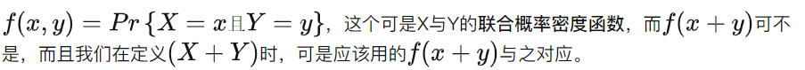
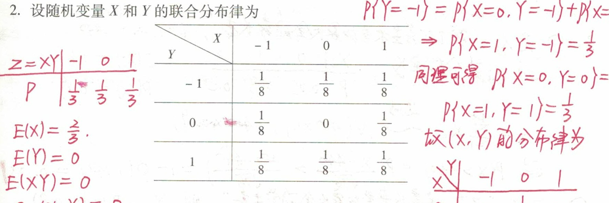
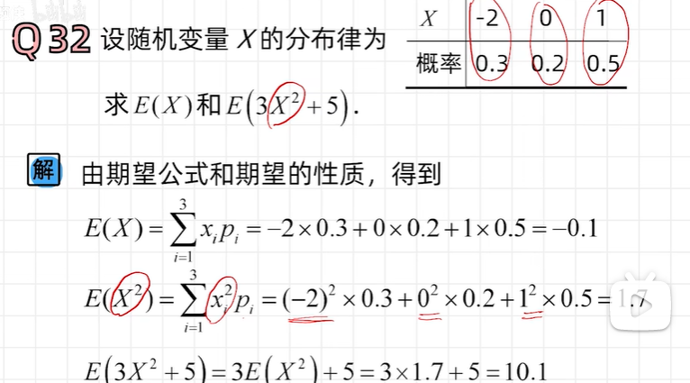
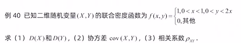
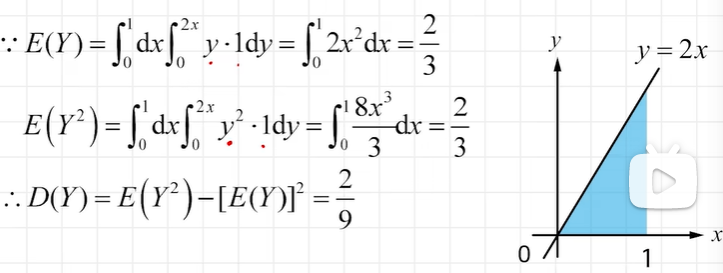
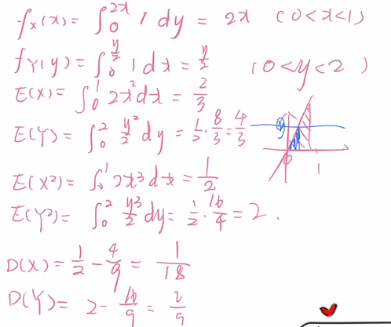

【一维】E(X)=∫−∞∞xf(x)dxE(X)=\int_{-\infty}^{\infty} x f(x) \mathrm{d} xE(X)=∫−∞∞xf(x)dxE(Y)=E[g(X)]=∫−∞∞g(x)f(x)dxE(Y)=E[g(X)]=\int_{-\infty}^{\infty} g(x) f(x) \mathrm{d} xE(Y)=E[g(X)]=∫−∞∞g(x)f(x)dx【二维】若二维随机变量(X,Y)的概率密度为f(x,y),则有若二维随机变量 (X, Y) 的概率密度为 f(x, y), 则有若二维随机变量(X,Y)的概率密度为f(x,y),则有E(Z)=E[g(X,Y)]=∫−∞∞∫−∞∞g(x,y)f(x,y)dx dyE(Z)=E[g(X, Y)]=\int^{\infty}_{-\infty} \int^{\infty}_{-\infty} g(x, y) f(x, y) \mathrm{d} x \mathrm{~d} yE(Z)=E[g(X,Y)]=∫−∞∞∫−∞∞g(x,y)f(x,y)dx dy我们可以用以下性质化简这个运算性质(线性性质)设C是常数,则有E(C)=C.设 C 是常数, 则有 E(C)=C.设C是常数,则有E(C)=C.设X是一个随机变量,C是常数,则有E(CX)=CE(X). 设 X 是一个随机变量, C 是常数,则有\\\\E(C X)=C E(X) \text {. }设X是一个随机变量,C是常数,则有E(CX)=CE(X). 证明设g(x)=kx那么有E(kX)=∫kx⋅fX(x)dx=k∫x⋅fX(x)dx=kE(X)证明\\设g(x)=k x\\那么有\\E(kX)=\int kx\cdot f_{X}(x) d x\\=k \int x \cdot f_X(x) d x\\=k E (X)证明设g(x)=kx那么有E(kX)=∫kx⋅fX(x)dx=k∫x⋅fX(x)dx=kE(X)设X,Y是两个随机变量,则有E(X+Y)=E(X)+E(Y).这一性质可以推广到任意有限个随机变量之和的情况.设 X, Y 是两个随机变量, 则有\\\\E(X+Y)=E(X)+E(Y) .\\\\这一性质可以推广到任意有限个随机变量之和的情况.设X,Y是两个随机变量,则有E(X+Y)=E(X)+E(Y).这一性质可以推广到任意有限个随机变量之和的情况.E(X+Y)=∫−∞∞∫−∞∞(x+y)f(x,y)dx dy=∫−∞∞∫−∞∞xf(x,y)dx dy+∫−∞∞∫−∞∞yf(x,y)dx dy=∫−∞∞xfX(x)dx+∫−∞∞yfY(y)dy=E(X)+E(Y)\begin{aligned} E(X+Y) &=\int_{-\infty}^{\infty} \int_{-\infty}^{\infty}(x+y) f(x, y) \mathrm{d} x \mathrm{~d} y \\ &=\int_{-\infty}^{\infty} \int_{-\infty}^{\infty} x f(x, y) \mathrm{d} x \mathrm{~d} y+\int_{-\infty}^{\infty} \int_{-\infty}^{\infty} y f(x, y) \mathrm{d} x \mathrm{~d} y \\&=\int_{-\infty}^{\infty}xf_X(x)dx+\int_{-\infty}^{\infty}yf_Y(y)dy\\ &=E(X)+E(Y) \end{aligned}E(X+Y)=∫−∞∞∫−∞∞(x+y)f(x,y)dx dy=∫−∞∞∫−∞∞xf(x,y)dx dy+∫−∞∞∫−∞∞yf(x,y)dx dy=∫−∞∞xfX(x)dx+∫−∞∞yfY(y)dy=E(X)+E(Y)也就是,(X+Y)=(X,Y)。也就是, (X+Y)=(X, Y) 。也就是,(X+Y)=(X,Y)。Lichy - 知乎X,Y独立⇒E(XY)=E(X)E(Y). {\color{Blue} X, Y 独立\mathbf{} } \Rightarrow E(X Y)=E(X) E(Y) .X,Y独立⇒E(XY)=E(X)E(Y).这一性质可以推广到任意有限个相互独立的随机变量之积的情况.证明：E(XY)=∬xyf(x,y)dxdy=独立∫xfX(x)dx(∫yfY(y)dy)=E(X)⋅E(Y)E(X Y)=\iint x y f(x, y) d x d y\\\stackrel{独立}{=} \int x f_{X}(x) d x\left(\int{y} f_{Y}(y) d y\right)\\=E(X) \cdot E(Y)E(XY)=∬xyf(x,y)dxdy=独立∫xfX(x)dx(∫yfY(y)dy)=E(X)⋅E(Y)请注意：X,Y独立⇍E(XY)=E(X)E(Y)⇒X,Y不相关X, Y 独立\nLeftarrow E(X Y)=E(X) E(Y)\Rightarrow X,Y不相关X,Y独立⇍E(XY)=E(X)E(Y)⇒X,Y不相关因为Cov(X,Y)=E(XY)−E(X)E(Y)=0⇒X,Y不相关Cov(X,Y)=E(XY)-E(X)E(Y)=0\Rightarrow X,Y不相关Cov(X,Y)=E(XY)−E(X)E(Y)=0⇒X,Y不相关一个例子：意义E(X2)=0E(X^2)=0E(X2)=0意味着什么？【离散】不可能事件与概率为0的事件是同一个事件E(X2)=∑k=1∞x2Pk=0⇒xk=0∀k⩾1E\left(X^{2}\right)=\sum_{k=1}^{\infty} x^{2} P_{k}=0 \Rightarrow x_{k}=0 \quad \forall{k} \geqslant 1E(X2)=k=1∑∞x2Pk=0⇒xk=0∀k⩾1【连续】不可能事件与概率为0的事件 不是同一个事件E(X2)=∫−∞∞x2fX(x)dx⇏x≡0E\left(X^{2}\right)=\int_{-\infty}^{\infty} x^{2} f_{X}(x) d x \nRightarrow x\equiv 0E(X2)=∫−∞∞x2fX(x)dx⇏x≡0考点：函数期望离散连续E(Z)=E[g(X,Y)]=∫−∞∞∫−∞∞g(x,y)f(x,y)dx dyE(Z)=E[g(X, Y)]=\int^{\infty}_{-\infty} \int^{\infty}_{-\infty} g(x, y) f(x, y) \mathrm{d} x \mathrm{~d} yE(Z)=E[g(X,Y)]=∫−∞∞∫−∞∞g(x,y)f(x,y)dx dy不太聪明的解法（甚至还解错了）
4e%7B%7Dn96kbay(zxsy%60xfc.jpg)